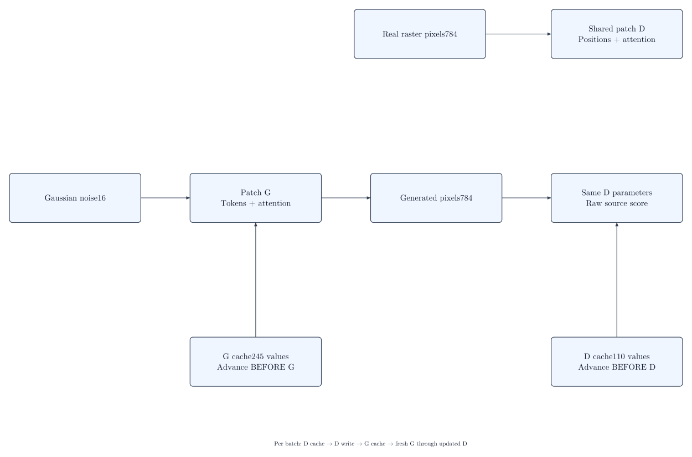
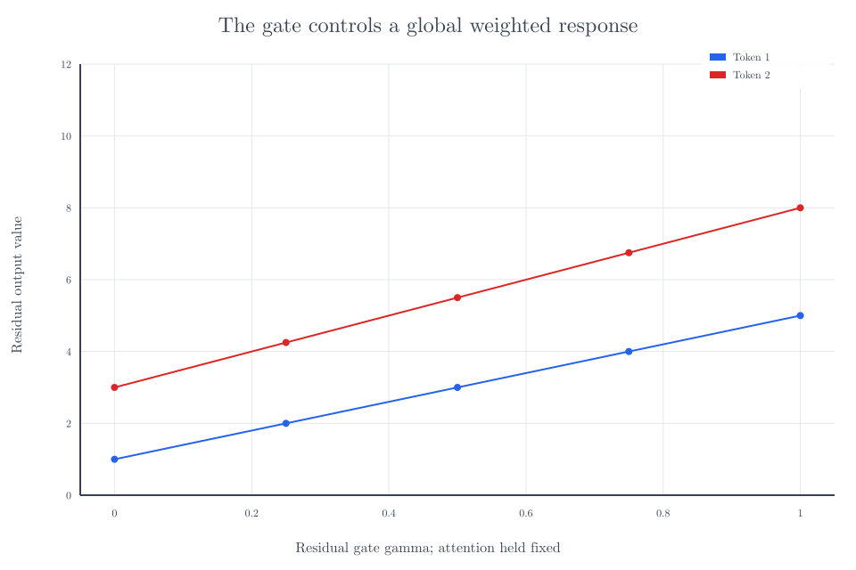
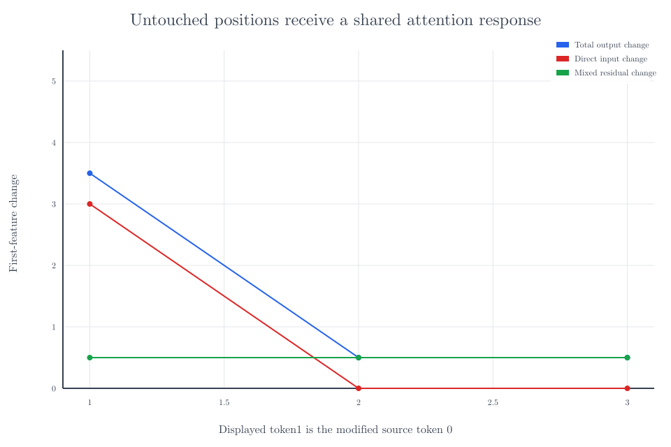
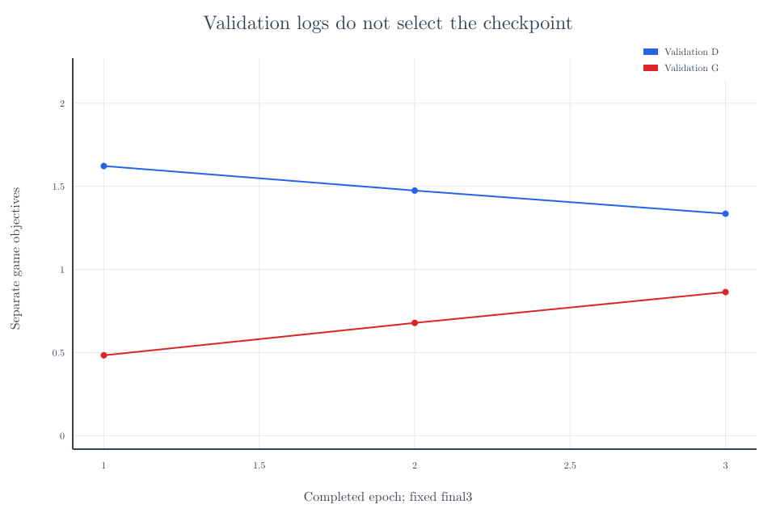
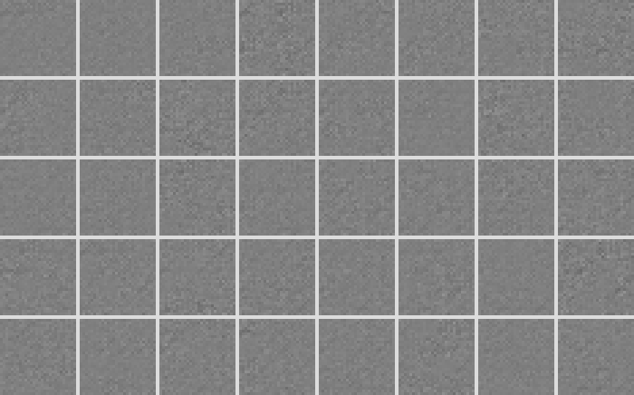
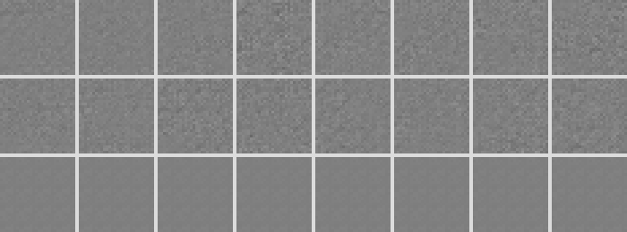
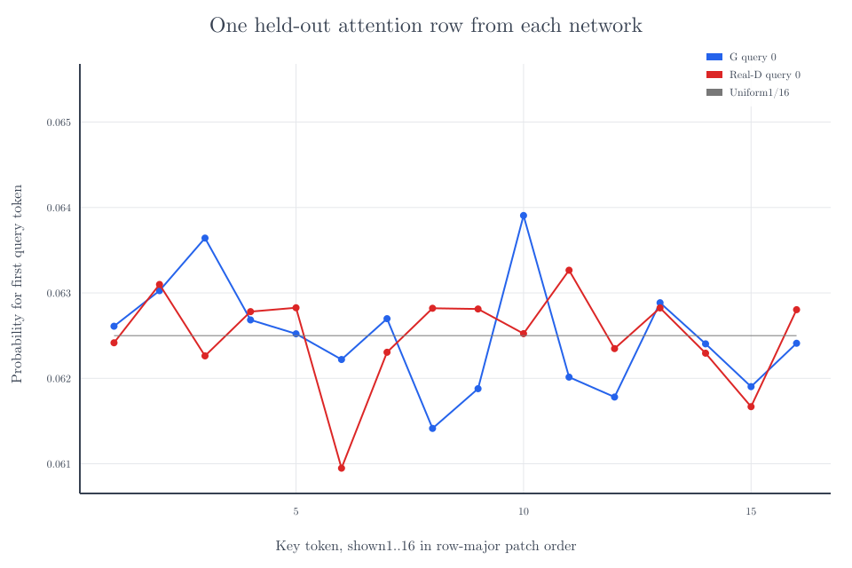
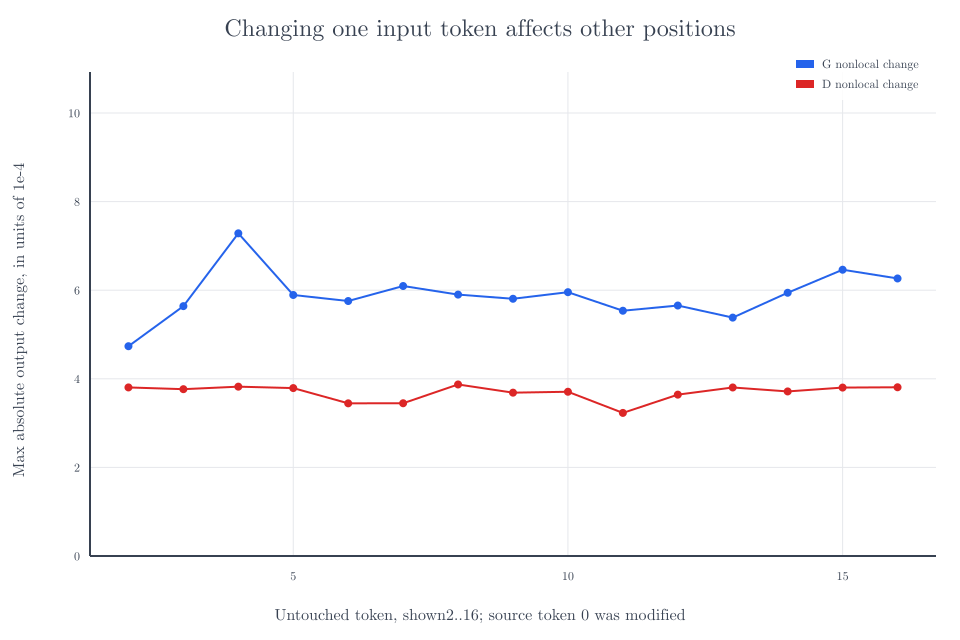

Self-Attention GAN: Spatial Mixing with Two Explicit Caches
Abstract
A compact spatial-patch GAN fits 1000 balanced MNIST images. Both generator and discriminator use unscaled softmax attention across sixteen spatial tokens, with query/key width 2, value width 4 and feature width 8. A scalar residual gate starts at zero. All twelve kernels use cached spectral normalization: sixteen warm-up iterations precede fitting, then D's cache advances before D and G's cache before a fresh G write. Two Adam states perform 96 writes each over three fixed epochs. The complete editable native program preserves the original checkpoint, derivatives, attention controls and weak grey samples. Small algebra and a controlled three-token example explain nonlocal mixing; trained controls show that this mechanism operates without establishing realistic generation or semantic localization.
Follow pixels, spatial tokens and the two caches
The reference is [Zhang et al., Self-Attention Generative Adversarial Networks (2018/2019)](https://arxiv.org/abs/1805.08318). This repository's small teaching variant uses dense shared patch maps rather than the paper's convolutional ImageNet architecture. G maps Gaussian noise 16 through spectral dense 128/tanh to sixteen 8-feature tokens; a spectral attention block mixes those tokens before a shared 8-to 49 sigmoid decoder assembles sixteen 7×7 patches into 28×28 pixels. D extracts the same patches, embeds 49-to 8 with tanh, adds learned 16×8 positions, mixes tokens, averages positions and predicts one raw source score. Both networks use attention and spectral normalization. No digit label enters fitting; the architecture, seeds and short schedule follow the frozen source.
#include <dm/dm.hpp>
int main() {
std::filesystem::create_directories("build");
dm::graphics::Diagram d(52, 1250);
dm::graphics::DiagramNodeStyle s;
s.width = 8.;
s.height = 3.;
s.font_size = 26;
d.node("real", {3, 10}, "Real raster pixels784", s)
.node("dr", {15, 10}, "Shared patch D\nPositions + attention", s)
.node("noise", {-18, 0}, "Gaussian noise16", s)
.node("g", {-7, 0}, "Patch G\nTokens + attention", s)
.node("fake", {4, 0}, "Generated pixels784", s)
.node("df", {15, 0}, "Same D parameters\nRaw source score", s)
.node("gs", {-7, -10}, "G cache245 values\nAdvance BEFORE G", s)
.node("ds", {15, -10}, "D cache110 values\nAdvance BEFORE D", s)
.edge("real", "dr")
.edge("noise", "g")
.edge("g", "fake")
.edge("fake", "df")
.edge("gs", "g")
.edge("ds", "df")
.text({0, -15}, "Per batch: D cache → D write → G cache → fresh G through updated D", 19)
.save_svg("build/self_attention_gan_method.svg");
}
Check the softmax and zero gate by hand
Take two query scalars q=(0,log 3), keys k=(0,1) and values v=(2,6). Unscaled qkᵀ gives rows(0,0) and(0,log 3); row softmax gives(.5,.5) and(.25,.75). The mixed values are therefore 4 and 5. For an identity projection and residual input x=(1,3), output=x+gamma×mixed: gamma 0 gives(1,3), gamma.5 gives(3,5.5). For the sum of outputs at gamma 0, the gate derivative is 4+5=9 while q/k/v partials vanish. This explains why zero gate initialization preserves input values but still allows attention's contribution to become active through a gate write.
#include <dm/dm.hpp>
int main() {
namespace n = dm::nn;
auto t = n::DType::Float64;
auto q = n::tensor({0., std::log(3.)}, {1, 2, 1}, t).requires_grad_(),
k = n::tensor({0., 1.}, {1, 2, 1}, t).requires_grad_(),
v = n::tensor({2., 6.}, {1, 2, 1}, t).requires_grad_();
n::AttentionOptions options;
options.scale = 1.;
options.need_weights = true;
options.impl = n::AttentionImpl::Plain;
auto a = n::scaled_dot_product_attention(q, k, v, options);
auto gate = n::scalar(0., t).requires_grad_();
auto x = n::tensor({1., 3.}, {1, 2, 1}, t);
auto y = x + gate * a.output;
auto gradients = n::grad(n::sum(y), {q, k, v, gate});
if (std::abs(gradients[3].item() - 9.) > 1e-13)
throw std::runtime_error("gate partial");
for (int i = 0; i < 3; ++i)
if (n::max(n::abs(gradients[i])).item() != 0)
throw std::runtime_error("zero projection partial");
std::print(
"Probability rows: .5,.5 and .25,.75; mixed values: {},{}. Gate partial={}\n",
a.output.at({0, 0, 0}),
a.output.at({0, 1, 0}),
gradients[3].item());
std::vector<double> axis{0., .25, .5, .75, 1.}, first, second;
for (double gamma : axis) {
auto value = x + gamma * a.output;
first.push_back(value.at({0, 0, 0}));
second.push_back(value.at({0, 1, 0}));
}
auto p = dm::graphics::RPlot::create();
p.y_limits(0., 12.)
.lines(axis, first, "Token 1", {37, 99, 235}, 2.)
.points(axis, first, "", {37, 99, 235}, 4.)
.lines(axis, second, "Token 2", {220, 38, 38}, 2.)
.points(axis, second, "", {220, 38, 38}, 4.)
.x_label("Residual gate gamma; attention held fixed")
.y_label("Residual output value")
.title("The gate controls a global weighted response")
.save_svg("build/self_attention_gan_algebra.svg");
}Probability rows: .5,.5 and .25,.75; mixed values: 4,5. Gate partial=9

Isolate a nonlocal effect with three controlled tokens
The reusable spectral attention layer accepts finite tokens[B,T,C], not only this experiment's sixteen 8-feature tokens. Here set T 3,C 2,Q 1,V 1. Zero query/key kernels give uniform rows(1/3,1/3,1/3); the value and projection kernels select the first feature with cached sigma 1, biases zero and gamma.5. Inputs(1,0),(2,0),(3,0) therefore receive a shared residual(1,0). Increasing only token 0's first feature by 3 raises the residual by.5 at every position. The changed token moves 3.5, while both untouched tokens move.5. These deliberately set weights explain the mechanism; they are separate from the learned checkpoint later in the report.
#include <dm/dm.hpp>
int main() {
namespace n = dm::nn;
auto t = n::DType::Float64;
n::ParameterStore p(1, t), s(0, t);
auto x = n::tensor({1., 0., 2., 0., 3., 0.}, {1, 3, 2}, t);
n::models::SpectralSpatialAttention(p, s, x, 1, 1);
for (const std::string name : {"query", "key"}) {
p.set("attention/" + name + "/W", n::zeros({2, 1}, t));
p.set("attention/" + name + "/b", n::zeros({1}, t));
}
p.set("attention/value/W", n::tensor({1., 0.}, {2, 1}, t));
p.set("attention/value/b", n::zeros({1}, t));
p.set("attention/project/W", n::tensor({1., 0.}, {1, 2}, t));
p.set("attention/project/b", n::zeros({2}, t));
p.set("attention/gamma", n::scalar(.5, t));
s.set("attention/value/u", n::ones({1, 1}, t));
s.set("attention/value/v", n::tensor({1., 0.}, {2, 1}, t));
s.set("attention/project/u", n::tensor({1., 0.}, {2, 1}, t));
s.set("attention/project/v", n::ones({1, 1}, t));
auto a = n::models::SpectralSpatialAttention(p, s, x, 1, 1),
b = n::models::SpectralSpatialAttention(
p, s, n::tensor({4., 0., 2., 0., 3., 0.}, {1, 3, 2}, t), 1, 1);
auto delta = b.output - a.output;
std::vector<double> change;
for (int i = 0; i < 3; ++i)
change.push_back(delta.at({0, i, 0}));
if (std::abs(change[0] - 3.5) > 1e-14 || std::abs(change[1] - .5) > 1e-14 ||
std::abs(change[2] - .5) > 1e-14)
throw std::runtime_error("nonlocal toy");
std::print(
"First-feature changes: {},{},{}; only token 0 input changed.\n",
change[0],
change[1],
change[2]);
auto plot = dm::graphics::RPlot::create();
plot.y_limits(0., 5.5)
.lines({1., 2., 3.}, change, "Total output change", {37, 99, 235}, 2.)
.points({1., 2., 3.}, change, "", {37, 99, 235}, 4.)
.lines({1., 2., 3.}, {3., 0., 0.}, "Direct input change", {220, 38, 38}, 2.)
.points({1., 2., 3.}, {3., 0., 0.}, "", {220, 38, 38}, 4.)
.lines({1., 2., 3.}, {.5, .5, .5}, "Mixed residual change", {22, 163, 74}, 2.)
.points({1., 2., 3.}, {.5, .5, .5}, "", {22, 163, 74}, 4.)
.x_label("Displayed token1 is the modified source token 0")
.y_label("First-feature change")
.title("Untouched positions receive a shared attention response")
.save_svg("build/self_attention_gan_toy.svg");
}First-feature changes: 3.5,0.5,0.5; only token 0 input changed.

SpectralSpatialAttention creates query, key, value and project biased spectral maps,
then a scalar gate. Query rows normalize over all key positions, without sqrt scaling,
masking or dropout. It reuses scaled_dot_product_attention with explicit scale 1,
Plain and returned weights. Projection kernels use cached_spectral_dense: signed
sigma=sum(detach(v)*(W*detach(u))), Wbar=W/max(sigma,double(1e-6f)). Ordered power
iteration uses x/sqrt(sum(x²)+double(1e-12f)), without extra initial normalization.
Both guards and initialization constants preserve source Float32 rounding in Float64 too.
Column paths always stop while sigma's weight derivative stays live. Existing cache never
advances implicitly; all candidate pairs validate before state writes. Finite iteration
is not an exact unit-kernel or network Lipschitz certificate.
Start with source scores whose losses can be checked by hand
For separate real and fake pools,
The real branch stops contributing to D at r≥1; the fake branch stops at f≤-1. At exactly r=1 or f=-1, native ReLU uses the zero subgradient. G has no hinge: its derivative remains -1/M everywhere, including those margins. G loss can be negative, and D scores need not lie in[-1,1]. At scalar r=1,f=-1, D=0,G=1 and D's two derivatives are zero while G's fake-score derivative is-1. Zero-margin D gradients do not imply convergence of image generation.
#include <dm/dm.hpp>
int main() {
namespace n = dm::nn;
std::vector<double> x, dr, df, gf;
for (int k = -60; k <= 60; ++k) {
x.push_back(k / 20.);
auto r = n::full({1, 1}, k / 20., n::DType::Float64).requires_grad_(),
f = n::full({1, 1}, k / 20., n::DType::Float64).requires_grad_();
const auto loss = n::models::HingeGanObjectives(r, f);
const auto d = n::grad(loss.discriminator, {r, f});
dr.push_back(d[0].item());
df.push_back(d[1].item());
gf.push_back(n::grad(n::models::HingeGanObjectives(r, f).generator, {f})[0].item());
}
auto p = dm::graphics::RPlot::create();
p.lines(x, dr, "D real derivative", {37, 99, 235}, 2.)
.lines(x, df, "D fake derivative", {22, 163, 74}, 2.)
.lines(x, gf, "G fake derivative", {220, 38, 38}, 2.)
.y_limits(-1.5, 2)
.x_label("Respective scalar raw source score")
.y_label("Derivative; each pool size1")
.title("Hinge objective: distinguish D and G directions")
.save_svg("build/self_attention_gan_derivatives.svg");
auto r = n::full({1, 1}, 1., n::DType::Float64).requires_grad_(),
f = n::full({1, 1}, -1., n::DType::Float64).requires_grad_();
const auto loss = n::models::HingeGanObjectives(r, f);
const auto d = n::grad(loss.discriminator, {r, f});
const auto g = n::grad(n::models::HingeGanObjectives(r, f).generator, {f});
std::print(
"Hand-check: D={:.9f},G={:.9f}; D derivatives={},{}; G derivative={}.\n",
loss.discriminator.item(),
loss.generator.item(),
d[0].item(),
d[1].item(),
g[0].item());
}Hand-check: D=0.000000000,G=1.000000000; D derivatives=-0,0; G derivative=-1.

Native preparation and separated digit pools
The program prepares the native mnist-assets recipe and loads its saliency pools.
Fitting/validation are disjoint subsets of original MNIST training data; test IDs remain
in the original test range. Every class contributes 100 fitting and 20 validation/test
images. The loader checks shape, IDs, balance and pixel scaling to Float32[0,1].
The preview takes the first two fitting observations per class, without model selection.
Labels describe the dataset balance and preview only; fitting ignores them.
The initial test forward is archived as an explicit diagnostic control; test outcomes never
choose weights, noise banks, hyperparameters or epochs. Validation only logs diagnostics.
#include <dm/dm.hpp>
int main() {
namespace n = dm::nn;
auto home = std::filesystem::path(dm::datasets::data_home());
dm::datasets::prepare_example_data("mnist-assets", home);
auto pools = n::models::LoadSaliency(home / "saliency");
std::vector<std::int64_t> rows;
auto labels = pools[0].labels.to_vector<std::int32_t>();
for (int c = 0; c < 10; ++c) {
int count = 0;
for (std::int64_t k = 0; k < 1000 && count < 2; ++k)
if (labels[k] == c) {
rows.push_back(k);
++count;
}
}
n::save_image_grid(
n::take_rows(pools[0].images, rows), "build/self_attention_gan_pools.png", 2, 0, 1, 4, 220 / 255., 3);
std::print(
"| pool | rows | each class | role |\n|---|---:|---:|---|\n| fitting |1000|100| Adam updates "
"|\n| validation |200|20| log only |\n| test |200|20| fixed final evaluation |\n");
}| pool | rows | each class | role |
|---|---|---|---|
| fitting | 1000 | 100 | Adam updates |
| validation | 200 | 20 | log only |
| test | 200 | 20 | fixed final evaluation |

Complete experiment: D cache, D write, G cache, fresh G write
G owns 2730 values in 13 leaves; D 650 in 14. G cache 245 and D cache 110 occupy 12 leaves each:51 checkpoint tensors/3735 values, with 3380 values optimized. Source creation order is input W,b; query/key/value/project W,b; gamma; patch W,b in G. D creates patch W,b; learned normal(.01) positions; query/key/value/project W,b; gamma; output W,b. Cache columns follow each kernel. G seed 5903 and D 5923 preserve initializer streams; cache constants are 1.f/sqrt(float(length)), and each uniform kernel limit is sqrt(6.f/float(in+out)). Both cache stores warm 16 iterations before the initial snapshot. The first archived batch forward precedes its per-group cache advances.
Separate Adam states use learning rate.0002, beta 1=.5, beta 2=.999, epsilon 1e-8. BatchOrder 4847 visits every fitting row once per epoch in batches up to 32. Epoch noise 4862/4863/4864, validation 4823, test 4831 and changed 4877 preserve all source draws. For each batch, advance only D cache, recompute and write only D; advance only G cache, then recompute G through the updated D using unchanged D cache and write only G. Each optimizer performs 96 writes. First-phase checks establish each selected owner. Cache leaves retain normal ParameterStore flags but are excluded from both optimizers.
All 51 tensors restore exactly. Independent generation and attention controls use the restored stores with no warm-up or state mutation. Final parameter derivatives on the first fitting batch are archived too. Validation is diagnostic logging only, and epoch 3 is fixed in advance. Initial test output is an explicit diagnostic control: test outcomes never choose weights, epochs, seeds or hyperparameters. MMD is added only in evaluation. Every preparation, fitting, cache advance, gradient selection and optimizer write is editable in this complete native program.
#include <dm/dm.hpp>
namespace nn = dm::nn;
namespace m = nn::models;
using Arrays = std::map<std::string, nn::Tensor>;
using nn::Tensor;
namespace {
void Require(bool condition, const std::string& message) {
if (!condition)
throw std::runtime_error(message);
}
void Near(double actual, double expected, double tolerance, const std::string& message) {
Require(std::abs(actual - expected) <= tolerance, message);
}
void SaveArrays(const std::string& path, const Arrays& a) {
nn::save_npz(path, nn::NamedTensors(a.begin(), a.end()));
}
bool Equal(const Tensor& a, const Tensor& b) {
return nn::equal_bits(a, b);
}
bool Equal(const Arrays& a, const Arrays& b) {
if (a.size() != b.size())
return false;
for (const auto& [key, value] : a)
if (!b.count(key) || !Equal(value, b.at(key)))
return false;
return true;
}
Tensor Gaussian(std::int64_t rows, std::int64_t width, std::uint64_t seed) {
return nn::cast(
m::GaussianNoise({rows, width}, 1, seed).reshape({rows, width}), nn::DType::Float32);
}
double MaxAbsDiff(const Tensor& a, const Tensor& b) {
return nn::max(nn::abs(nn::cast(a, nn::DType::Float64) - nn::cast(b, nn::DType::Float64))).item();
}
void Mosaic(const std::filesystem::path& path, const Tensor& images, std::int64_t columns) {
nn::save_image_grid(
images.reshape({images.size(0), 28, 28, 1}), path.string(), columns, 0, 1, 4, 220 / 255., 3);
}
void Owners(const Arrays& before, const Arrays& after, const std::string& prefix) {
bool changed = false;
for (const auto& [key, value] : before) {
if (key.rfind(prefix, 0) == 0)
changed |= !Equal(value, after.at(key));
else
Require(Equal(value, after.at(key)), "unselected store unchanged");
}
Require(changed, "selected owner changes");
}
Arrays Fields(const m::SelfAttentionGanOutput& o) {
return {
{"fake", o.fake},
{"real_score", o.real_score},
{"fake_score", o.fake_score},
{"discriminator_loss", o.discriminator_loss},
{"generator_loss", o.generator_loss},
{"g_attention", o.g_attention},
{"g_attention_input", o.g_attention_input},
{"g_attention_output", o.g_attention_output},
{"real_attention", o.real_attention},
{"real_attention_input", o.real_attention_input},
{"real_attention_output", o.real_attention_output},
{"fake_attention", o.fake_attention}};
}
double Value(const Arrays& a, const std::string& key) {
return a.at(key).item();
}
/// Hinge algebra at extreme, boundary (+-1) and interior raw scores: finite
/// losses and gradients and a constant nonzero G score gradient.
void Algebra(const std::filesystem::path& root) {
Tensor real = nn::tensor({-80, -2, 1, 2, 80, .5}, {6, 1}),
fake = nn::tensor({80, 2, -1, -2, -80, -.5}, {6, 1});
real.requires_grad_();
fake.requires_grad_();
const auto loss = m::HingeGanObjectives(real, fake);
const auto dg = nn::grad(loss.discriminator, {real, fake});
const auto gg = nn::grad(loss.generator, {fake});
Arrays out{
{"real", real.detach()},
{"fake", fake.detach()},
{"discriminator_loss", loss.discriminator.detach()},
{"generator_loss", loss.generator.detach()},
{"d_real_gradient", dg[0]},
{"d_fake_gradient", dg[1]},
{"g_fake_gradient", gg[0]}};
for (const auto& [key, value] : out)
for (double x : value.to_vector<double>())
Require(std::isfinite(x), "finite " + key);
Require(gg[0].at({3, 0}) < -.15, "hinge G retains constant nonzero raw score gradient");
std::cout << "hinge algebra: D loss=" << loss.discriminator.item()
<< ", G loss=" << loss.generator.item() << ", dG/dfake=" << gg[0].values_str() << '\n';
SaveArrays((root / "hinge_algebra.npz").string(), out);
}
} // namespace
int main() {
const std::filesystem::path root = "build/self_attention_gan";
const int epochs = 3;
const auto data = std::filesystem::path(dm::datasets::data_home()) / "saliency";
dm::datasets::prepare_example_data("mnist-assets", data.parent_path());
const auto pools = m::LoadSaliency(data);
std::filesystem::create_directories(root);
Algebra(root);
const Tensor validation_z = Gaussian(200, 16, 4823), test_z = Gaussian(200, 16, 4831);
nn::ParameterStore g(5903), d(5923), gs(0), ds(0);
std::vector<nn::ParameterStore*> stores{&g, &d, &gs, &ds};
{
nn::NoGradGuard guard;
m::SelfAttentionGan(g, d, gs, ds, nn::zeros({2, 784}), nn::zeros({2, 16}));
}
nn::advance_cached_spectral_state(g, gs, 16);
nn::advance_cached_spectral_state(d, ds, 16);
auto snapshot = [&]() {
Arrays a;
for (int k = 0; k < 4; ++k)
for (const auto& key : stores[k]->names())
a.emplace(std::to_string(k) + "/" + key, stores[k]->at(key).detach().clone());
return a;
};
auto forward = [&](const Tensor& x, const Tensor& z) {
return Fields(m::SelfAttentionGan(g, d, gs, ds, x.reshape({x.size(0), 784}), z));
};
auto evaluate = [&](const Tensor& x, const Tensor& z) {
nn::NoGradGuard guard;
auto a = forward(x, z);
a.emplace(
"pixel_mmd", m::ImqMmd(m::GanCoarsePixels(x), m::GanCoarsePixels(a.at("fake"))).value);
return a;
};
nn::OptimizerConfig config;
config.kind = nn::OptimizerKind::Adam;
config.beta1 = .5;
config.beta2 = .999;
config.epsilon = 1e-8;
nn::Optimizer go(g, .0002, config), disc(d, .0002, config);
std::vector<nn::Optimizer*> optimizers{&go, &disc};
Require(
g.count() == 2730 && d.count() == 650 && gs.count() == 245 && ds.count() == 110,
"G 2730 + D 650 + 355 state");
SaveArrays((root / "initial_arrays.npz").string(), snapshot());
SaveArrays((root / "initial_outputs.npz").string(), evaluate(pools[2].images, test_z));
nn::BatchOrder order(1000, 32, 4847);
std::ofstream history(root / "history.tsv"), batches(root / "batches.tsv");
history.precision(17);
history << "epoch\tvalidation_discriminator_loss\tvalidation_generator_loss\tvalidation_coarse_"
"pixel_mmd\n";
batches << "epoch\tstep\trow\tsource_id\n";
const auto source = nn::cast(pools[0].source, nn::DType::Int64).to_vector<std::int64_t>();
int steps = 0;
Tensor first_x, first_z;
const auto started = std::chrono::steady_clock::now();
for (int epoch = 1; epoch <= epochs; ++epoch) {
const Tensor noise = Gaussian(1000, 16, 4861 + epoch);
order.begin_epoch();
int seen = 0;
for (;;) {
const auto rows = order.next();
if (rows.empty())
break;
const Tensor x = nn::take_rows(pools[0].images, rows), z = nn::take_rows(noise, rows);
if (!steps)
SaveArrays((root / "first_forward.npz").string(), evaluate(x, z));
if (!steps)
first_x = x, first_z = z;
for (int group : {1, 0}) {
{
const auto before = steps ? Arrays{} : snapshot();
nn::advance_cached_spectral_state(*stores[group], *stores[group + 2]);
if (!steps)
Owners(before, snapshot(), std::to_string(group + 2) + "/");
}
const auto before = steps ? Arrays{} : snapshot();
// Every phase recomputes after its own cache advance and the prior D write.
const auto fields = forward(x, z);
optimizers[group]->step(
nn::grad(
fields.at(group == 0 ? "generator_loss" : "discriminator_loss"),
stores[group]->parameters()));
if (!steps)
Owners(before, snapshot(), std::to_string(group) + "/");
}
for (auto row : rows)
batches << epoch << '\t' << steps << '\t' << row << '\t' << source[row] << '\n';
++steps;
seen += int(rows.size());
}
Require(seen == 1000, "all fitting MNIST examples ONCE per epoch");
const auto v = evaluate(pools[1].images, validation_z);
history << epoch << '\t' << Value(v, "discriminator_loss") << '\t' << Value(v, "generator_loss")
<< '\t' << Value(v, "pixel_mmd") << '\n';
std::cout << "epoch " << epoch << ": diagnostic D loss=" << Value(v, "discriminator_loss")
<< ", G loss=" << Value(v, "generator_loss")
<< ", coarse MMD=" << Value(v, "pixel_mmd") << std::endl;
}
const double seconds =
std::chrono::duration<double>(std::chrono::steady_clock::now() - started).count();
const auto checkpoint = (root / "final.npz").string();
Require(
steps == 96 && go.iterations() == 96 && disc.iterations() == 96,
"192 explicit optimizer writes");
SaveArrays(checkpoint, snapshot());
nn::ParameterStore rg(1), rd(2), rgs(3), rds(4);
std::vector<nn::ParameterStore*> restored{&rg, &rd, &rgs, &rds};
{
nn::NoGradGuard guard;
m::SelfAttentionGan(rg, rd, rgs, rds, nn::zeros({2, 784}), nn::zeros({2, 16}));
}
for (const auto& [key, value] : nn::load_npz(checkpoint))
restored[key[0] - '0']->set(key.substr(2), value);
auto restored_arrays = [&]() {
Arrays a;
for (int k = 0; k < 4; ++k)
for (const auto& key : restored[k]->names())
a.emplace(std::to_string(k) + "/" + key, restored[k]->at(key).detach().clone());
return a;
};
auto sample = [&](const Tensor& z) {
nn::NoGradGuard guard;
return m::SelfAttentionGanGenerate(rg, rgs, z).pixels;
};
auto restored_evaluate = [&](const Tensor& x, const Tensor& z) {
nn::NoGradGuard guard;
auto a = Fields(m::SelfAttentionGan(rg, rd, rgs, rds, x.reshape({x.size(0), 784}), z));
a.emplace(
"pixel_mmd", m::ImqMmd(m::GanCoarsePixels(x), m::GanCoarsePixels(a.at("fake"))).value);
return a;
};
auto attention = [&](bool generator, const Tensor& tokens) {
nn::NoGradGuard guard;
auto a = m::SpectralSpatialAttention(generator ? rg : rd, generator ? rgs : rds, tokens);
return Arrays{{"probability", a.probability}, {"output", a.output}};
};
Require(Equal(snapshot(), restored_arrays()), "all51 checkpoint tensors restore bit exactly");
for (int group = 0; group < 2; ++group) {
const auto fields = forward(first_x, first_z);
const auto partials = nn::grad(
fields.at(group == 0 ? "generator_loss" : "discriminator_loss"),
stores[group]->parameters());
Arrays a;
const auto names = stores[group]->names();
for (std::size_t k = 0; k < names.size(); ++k)
a.emplace(std::to_string(group) + "/" + names[k], partials[k]);
SaveArrays((root / ("final_gradients_group" + std::to_string(group) + ".npz")).string(), a);
}
const auto before = restored_arrays();
const auto output = restored_evaluate(pools[2].images, test_z);
const Tensor repeat = sample(test_z);
Require(
Equal(output.at("fake"), repeat), "noise-only generation BIT EXACT matches GAN evaluation");
const double parity = MaxAbsDiff(sample(nn::take_rows(test_z, {0})), nn::take_rows(repeat, {0}));
Require(parity < 2e-6, "G single/batch parity");
const Tensor changed_z = Gaussian(200, 16, 4877), changed_images = sample(changed_z);
Require(!Equal(changed_images, repeat), "different noise affects G images");
const Tensor zero_images = sample(nn::zeros({200, 16}));
Require(!Equal(zero_images, repeat), "G not constant zero-latent mapping");
SaveArrays(
(root / "controls.npz").string(),
{{"changed_z", changed_z},
{"changed_images", changed_images},
{"zero_z", nn::zeros({200, 16})},
{"zero_images", zero_images}});
Arrays attention_controls;
for (int group = 0; group < 2; ++group) {
const Tensor tokens =
nn::take_rows(output.at(group == 0 ? "g_attention_input" : "real_attention_input"), {0, 1});
auto values = tokens.contiguous().to_vector<float>();
values[0] += 1.f, values[128] += 1.f; // token 0, feature 0 of both rows
const Tensor modified = nn::from_vector(values, tokens.shape());
const auto baseline = attention(group == 0, tokens), changed = attention(group == 0, modified);
const auto bo = baseline.at("output").contiguous().to_vector<float>(),
co = changed.at("output").contiguous().to_vector<float>();
double effect = 0;
for (int b = 0; b < 2; ++b)
for (int j = 8; j < 128; ++j)
effect = std::max(effect, std::abs(double(bo[b * 128 + j]) - co[b * 128 + j]));
Require(effect > 1e-9, "changing ONE spatial token affects OTHER positions via attention");
const auto probability = baseline.at("probability").contiguous().to_vector<float>();
for (int b = 0; b < 2; ++b)
for (int q = 0; q < 16; ++q) {
double sum = 0;
for (int k = 0; k < 16; ++k)
sum += probability[(b * 16 + q) * 16 + k];
Near(sum, 1, 2e-6, "attention row stochastic");
}
const std::string prefix = std::to_string(group) + "/";
attention_controls.emplace(prefix + "input", tokens);
attention_controls.emplace(prefix + "modified_input", modified);
attention_controls.emplace(prefix + "output", baseline.at("output"));
attention_controls.emplace(prefix + "modified_output", changed.at("output"));
attention_controls.emplace(prefix + "probability", baseline.at("probability"));
std::cout << (group ? "D" : "G")
<< " attention: max effect of one token on OTHER positions=" << effect << '\n';
}
SaveArrays((root / "attention_controls.npz").string(), attention_controls);
Require(Equal(before, restored_arrays()), "all G/D diagnostic generation immutable");
SaveArrays((root / "outputs.npz").string(), output);
const Tensor fit_mean =
nn::tile(nn::mean(pools[0].images.reshape({1000, 784}), {0}, true), {200, 1});
const double mean_mmd =
m::ImqMmd(m::GanCoarsePixels(pools[2].images), m::GanCoarsePixels(fit_mean)).value.item();
double real_accuracy = 0, fake_accuracy = 0;
const auto real_score = output.at("real_score").to_vector<float>(),
fake_score = output.at("fake_score").to_vector<float>();
for (int b = 0; b < 200; ++b)
real_accuracy += real_score[b] >= 0, fake_accuracy += fake_score[b] < 0;
const auto mean = nn::mean(nn::cast(repeat, nn::DType::Float64), {0}, true);
const double mean_pixel = nn::mean(mean).item(),
pixel_variance =
nn::mean(nn::square(nn::cast(repeat, nn::DType::Float64) - mean)).item();
Mosaic(root / "generated.png", nn::slice_axis(repeat, 0, 0, 40), 8);
Mosaic(root / "fit_mean.png", nn::slice_axis(fit_mean, 0, 0, 8), 8);
std::ofstream meta(root / "metrics.json");
meta.precision(17);
meta << "{\"generator_parameters\":2730,\"discriminator_parameters\":650,\"epochs\":" << epochs
<< ",\"steps_per_group\":" << steps << ",\"optimizer_updates\":" << 2 * steps
<< ",\"selected_epoch_fixed_final\":" << epochs
<< ",\"test_discriminator_loss\":" << Value(output, "discriminator_loss")
<< ",\"test_generator_loss\":" << Value(output, "generator_loss")
<< ",\"test_coarse_pixel_mmd\":" << Value(output, "pixel_mmd")
<< ",\"fit_mean_coarse_pixel_mmd\":" << mean_mmd
<< ",\"test_discriminator_real_accuracy\":" << real_accuracy / 200
<< ",\"test_discriminator_fake_accuracy\":" << fake_accuracy / 200
<< ",\"generated_mean_pixel\":" << mean_pixel
<< ",\"generated_mean_per_pixel_variance\":" << pixel_variance
<< ",\"single_batch_max_error\":" << parity << ",\"training_seconds\":" << seconds << "}\n";
Require(bool(meta) && bool(history) && bool(batches), "complete GAN artifacts");
history.close();
batches.close();
meta.close();
std::cout << "fixed FINAL epoch " << epochs
<< ", test D/G=" << Value(output, "discriminator_loss") << "/"
<< Value(output, "generator_loss") << ", coarse MMD=" << Value(output, "pixel_mmd")
<< ", mean baseline=" << mean_mmd
<< ", D real/fake accuracy (threshold 0)=" << real_accuracy / 200 << "/"
<< fake_accuracy / 200 << ", mean pixel=" << mean_pixel
<< ", pixel variance=" << pixel_variance
<< "; D then G/restore/noiseOnly/immutable PASS (training " << seconds
<< " s)\nArtifacts: " << root.string() << "\nAll self_attention_gan checks passed.\n";
std::ifstream input(root / "history.tsv");
std::string header;
std::getline(input, header);
std::vector<double> axis, dl, gl;
double epoch, a, b, mmd;
while (input >> epoch >> a >> b >> mmd) {
axis.push_back(epoch);
dl.push_back(a);
gl.push_back(b);
}
const double low = std::min(
{0., *std::min_element(dl.begin(), dl.end()), *std::min_element(gl.begin(), gl.end())});
const double high =
std::max(*std::max_element(dl.begin(), dl.end()), *std::max_element(gl.begin(), gl.end()));
auto p = dm::graphics::RPlot::create();
p.y_limits(low - .05 * (high - low), high + .4 * (high - low))
.lines(axis, dl, "Validation D", {37, 99, 235}, 2.)
.points(axis, dl, "", {37, 99, 235}, 4.)
.lines(axis, gl, "Validation G", {220, 38, 38}, 2.)
.points(axis, gl, "", {220, 38, 38}, 4.)
.x_label("Completed epoch; fixed final3")
.y_label("Separate game objectives")
.title("Validation logs do not select the checkpoint")
.save_svg("build/self_attention_gan_learning.svg");
}hinge algebra: D loss=28.1667, G loss=0.25, dG/dfake=[[-0.166667], [-0.166667], [-0.166667], [-0.166667], [-0.166667], [-0.166667]] epoch 1: diagnostic D loss=1.62219, G loss=0.483479, coarse MMD=0.120616 epoch 2: diagnostic D loss=1.47452, G loss=0.678403, coarse MMD=0.120365 epoch 3: diagnostic D loss=1.33524, G loss=0.863683, coarse MMD=0.120011 G attention: max effect of one token on OTHER positions=0.000728369 D attention: max effect of one token on OTHER positions=0.000387209 fixed FINAL epoch 3, test D/G=1.34462/0.863172, coarse MMD=0.117778, mean baseline=0.000135779, D real/fake accuracy (threshold 0)=0/1, mean pixel=0.49841, pixel variance=0.000416633; D then G/restore/noiseOnly/immutable PASS (training 0.967035 s) Artifacts: build/self_attention_gan All self_attention_gan checks passed.

The held-out samples remain weak
| Fixed final diagnostic | Value |
|---|---|
| D objective | 1.3446242809 |
| G objective | 0.8631716371 |
| Coarse-pixel MMD² | 0.1177780628 |
| Repeated fitting-mean MMD² | 0.0001357794 |
| D real/fake source accuracy | 0.000/1.000 |
| Generated mean pixel | 0.4984095126 |
| Mean per-pixel variance across generated rows | 0.0004166329 |
Source accuracy uses raw score≥0 for real and score<0 for fake. It measures this discriminator on these two sources, not digit recognition, calibration or sample realism. The gallery retains the first 40 fixed-bank outputs, without choosing attractive samples. Most remain grey fields rather than convincing digits. The real-source accuracy is zero even though every generated row is classified fake. This weak game and grey gallery provide no evidence of a successful image model.
#include <dm/dm.hpp>
int main() {
std::filesystem::copy_file(
"build/self_attention_gan/generated.png",
"build/self_attention_gan_generated.png",
std::filesystem::copy_options::overwrite_existing);
std::print("First40 fixed-bank samples; no gallery selection.\n");
}First40 fixed-bank samples; no gallery selection.

The coarse diagnostic has a deliberately visible blind spot
The MMD diagnostic first averages each 7×7 pixel block, giving 16 coordinates per image, and divides those coordinates by 4. It then averages IMQ kernels with constants 1,4,16 and excludes within-pool diagonals in the unbiased two-sample estimate. This statistic can be negative at finite sample size and discards fine digit structure. The baseline repeats the fitting-only mean image 200 times; it uses no held-out pixels to construct it. Its much smaller value shows why coarse MMD alone cannot certify sample quality or coverage. Neither the mean nor MMD adds a fitting objective or selects the checkpoint.
#include <dm/dm.hpp>
int main() {
std::filesystem::copy_file(
"build/self_attention_gan/fit_mean.png",
"build/self_attention_gan_mean.png",
std::filesystem::copy_options::overwrite_existing);
std::print(
"Repeated fitting mean: MMD²=0.0001357794; generator: 0.1177780628. Both use the same200 "
"held-out images.\n");
}Repeated fitting mean: MMD²=0.0001357794; generator: 0.1177780628. Both use the same200 held-out images.

Changed noise is a control, not evidence of realistic samples
Seed 4877 supplies the changed bank; the zero bank has the same shape. The restored G responds to both changes, while standalone generation on the fixed bank matches the full forward bit for bit. The first sample agrees between single and batch inference (maximum error 0). Every saved weight and cache column restores exactly, and all diagnostic calls leave all four stores unchanged. Responsiveness proves dependence on the input, not useful mode coverage, diversity of recognizable digits or convergence.
#include <dm/dm.hpp>
int main() {
namespace n = dm::nn;
std::map<std::string, n::Tensor> a, c;
for (const auto& [k, v] : n::load_npz("build/self_attention_gan/outputs.npz"))
a.emplace(k, v);
for (const auto& [k, v] : n::load_npz("build/self_attention_gan/controls.npz"))
c.emplace(k, v);
auto first = [](const auto& x) { return n::slice_axis(x, 0, 0, 8); };
auto images = n::concat(
{first(a.at("fake")), first(c.at("changed_images")), first(c.at("zero_images"))}, 0);
n::save_image_grid(
images.reshape({24, 28, 28, 1}), "build/self_attention_gan_noise.png", 8, 0, 1, 4, 220 / 255., 3);
std::print(
"Rows: fixed seed4831; changed seed4877; zero input. All control weights unchanged.\n");
}Rows: fixed seed4831; changed seed4877; zero input. All control weights unchanged.

Inspect one fitted attention row without assigning semantic meaning
The first held-out generated/real image supplies query token 0, the upper-left spatial patch. The plot retains all 16 key probabilities in native row-major patch order. Each row sums to one; near-uniform weights can still mix information. This single row is not an explanation of digit identity, a localization benchmark or evidence of useful long-range reasoning. Both learned residual gates are reported beside the figure.
#include <dm/dm.hpp>
int main() {
namespace n = dm::nn;
std::map<std::string, n::Tensor> a, p;
for (const auto& [k, v] : n::load_npz("build/self_attention_gan/outputs.npz"))
a.emplace(k, v);
for (const auto& [k, v] : n::load_npz("build/self_attention_gan/final.npz"))
p.emplace(k, v);
std::vector<double> keys, g, d;
for (int k = 0; k < 16; ++k) {
keys.push_back(k + 1);
g.push_back(a.at("g_attention").at({0, 0, k}));
d.push_back(a.at("real_attention").at({0, 0, k}));
}
std::print(
"Learned gates: G={} ; D={} ; selected G/D row sums={},{}\n",
p.at("0/attention/gamma").item(),
p.at("1/attention/gamma").item(),
std::accumulate(g.begin(), g.end(), 0.),
std::accumulate(d.begin(), d.end(), 0.));
double
low = std::min(
{1. / 16, *std::min_element(g.begin(), g.end()), *std::min_element(d.begin(), d.end())}),
high = std::max(
{1. / 16, *std::max_element(g.begin(), g.end()), *std::max_element(d.begin(), d.end())});
double span = std::max(high - low, 1e-6);
auto plot = dm::graphics::RPlot::create();
plot.y_limits(low - .1 * span, high + .6 * span)
.lines(keys, g, "G query 0", {37, 99, 235}, 2.)
.points(keys, g, "", {37, 99, 235}, 4.)
.lines(keys, d, "Real-D query 0", {220, 38, 38}, 2.)
.points(keys, d, "", {220, 38, 38}, 4.)
.lines({1., 16.}, {1. / 16, 1. / 16}, "Uniform1/16", {120, 120, 120}, 1.)
.x_label("Key token, shown1..16 in row-major patch order")
.y_label("Probability for first query token")
.title("One held-out attention row from each network")
.save_svg("build/self_attention_gan_weights.svg");
}Learned gates: G=-0.03256197273731232 ; D=-0.024380311369895935 ; selected G/D row sums=1.0000000186264515,0.9999999925494194

Perturb one trained token and measure other output positions
The frozen control takes the first two held-out attention inputs for each network and adds 1 to feature 0 of token 0. Existing weights and cache stay fixed. The plotted quantity is max absolute output change over both rows and all 8 features at each of the 15 untouched positions. It excludes the modified token's direct residual input change. The maximum nonlocal changes are about.000728369 in G and.000387209 in D. Attention therefore mixes spatial information in both fitted networks, but the effects are small and samples remain weak. These controls establish dependence on other tokens rather than realistic images, disentanglement or semantic attention localization.
#include <dm/dm.hpp>
int main() {
namespace n = dm::nn;
std::map<std::string, n::Tensor> c;
for (const auto& [k, v] : n::load_npz("build/self_attention_gan/attention_controls.npz"))
c.emplace(k, v);
std::vector<double> axis, g, d;
for (int t = 1; t < 16; ++t) {
axis.push_back(t + 1);
for (int group = 0; group < 2; ++group) {
auto key = std::to_string(group) + "/";
double effect = 0;
for (int b = 0; b < 2; ++b)
for (int f = 0; f < 8; ++f)
effect = std::max(
effect,
std::abs(
c.at(key + "output").at({b, t, f}) -
c.at(key + "modified_output").at({b, t, f})));
(group ? d : g).push_back(effect);
}
}
double maximum =
std::max(*std::max_element(g.begin(), g.end()), *std::max_element(d.begin(), d.end()));
std::print(
"Maximum OTHER-token effect: G={} ; D={}. All checkpoint values unchanged.\n",
*std::max_element(g.begin(), g.end()),
*std::max_element(d.begin(), d.end()));
for (auto& value : g)
value *= 1e4;
for (auto& value : d)
value *= 1e4;
maximum *= 1e4;
auto plot = dm::graphics::RPlot::create();
plot.y_limits(0., maximum * 1.5)
.lines(axis, g, "G nonlocal change", {37, 99, 235}, 2.)
.points(axis, g, "", {37, 99, 235}, 4.)
.lines(axis, d, "D nonlocal change", {220, 38, 38}, 2.)
.points(axis, d, "", {220, 38, 38}, 4.)
.x_label("Untouched token, shown2..16; source token 0 was modified")
.y_label("Max absolute output change, in units of 1e-4")
.title("Changing one input token affects other positions")
.save_svg("build/self_attention_gan_effect.svg");
}Maximum OTHER-token effect: G=0.0007283687591552734 ; D=0.0003872085362672806. All checkpoint values unchanged.

Verification and limits
Both unchanged-source delegation and this report match all ten frozen archives/1226475 values exactly in dtype, shape and value bytes, both source PNGs, both TSVs and every non-timing metric. Twelve first-phase probe archives additionally match 97010 native values across initialization, both cache advances, initial/advanced gradients and selected D/G writes. Existing Plain attention at scale 1 matches the source's initial and final G/D attention outputs and all token/projection derivatives bit for bit. The shared dense refactor also retains all 364381 frozen Spectral GAN probe values exactly.
The independent NumPy checker imports no datamunge and performs no fitting. It checks 892521 forward values,15600 native derivatives,71 final scalar finite differences, all 355 cache values,16 warm-up iterations per network,3735 checkpoint values and 3000 fitting-row visits. It reproduces patch permutations, unscaled softmax, stopped spectral-column normalization derivatives, gamma-zero identity, trained attention and noise controls, and state-D-state-fresh-G ownership. Native, Python and R component checks also cover owned fields, malformed inputs, live continuous paths and explicit host-owned writes. Component coverage does not complete independent Python/R full experiment loops.
This is one short fixed-seed run without an uncertainty analysis, seed sweep or paper-scale image benchmark. Small nonlocal effects and normalized attention rows do not establish semantic explanations. The gallery, poor real-source classification and much better constant-mean MMD baseline remain visible; no convergence or generation-quality claim follows from these mechanism and numerical checks.